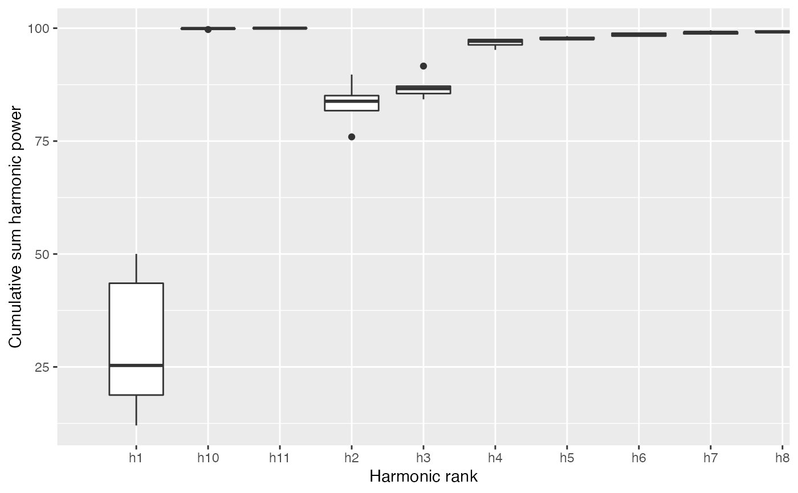
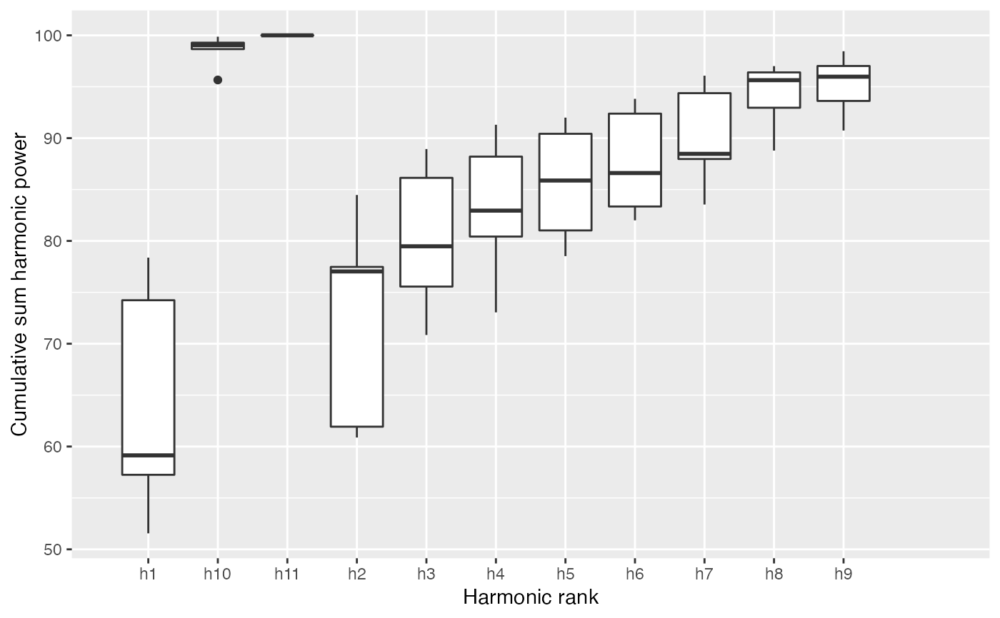

Quantitative calibration, through harmonic power, for Out and Opn objects
Estimates the number of harmonics required for the four Fourier methods
implemented in Momocs: elliptical Fourier analysis
(see efourier), radii variation analysis (see rfourier)
and tangent angle analysis (see tfourier) and
discrete Fourier transform (see dfourier).
It returns and can plot cumulated harmonic power whether dropping
the first harmonic or not, and based and the maximum possible number
of harmonics on the Coo object.
calibrate_harmonicpower() calibrate_harmonicpower_efourier(x, id = 1:length(x), nb.h, drop = 1, thresh = c(90, 95, 99, 99.9), plot = TRUE) calibrate_harmonicpower_rfourier(x, id = 1:length(x), nb.h, drop = 1, thresh = c(90, 95, 99, 99.9), plot = TRUE) calibrate_harmonicpower_tfourier(x, id = 1:length(x), nb.h, drop = 1, thresh = c(90, 95, 99, 99.9), plot = TRUE) calibrate_harmonicpower_sfourier(x, id = 1:length(x), nb.h, drop = 1, thresh = c(90, 95, 99, 99.9), plot = TRUE) calibrate_harmonicpower_dfourier(x, id = 1:length(x), nb.h, drop = 1, thresh = c(90, 95, 99, 99.9), plot = TRUE)
Arguments
| x | a |
|---|---|
| id | the shapes on which to perform calibrate_harmonicpower. All of them by default |
| nb.h | numeric the maximum number of harmonic, on which to base the cumsum |
| drop | numeric the number of harmonics to drop for the cumulative sum |
| thresh | vector of numeric for drawing horizontal lines, and also used for
|
| plot | logical whether to plot the result or simply return the matrix
Silent message and progress bars (if any) with |
Value
returns a list with component:
gga ggplot object,qthe quantile matrixminha quick summary that returns the number of harmonics required to achieve a certain proportion of the total harmonic power.
Details
The power of a given harmonic \(n\) is calculated as follows for elliptical Fourier analysis and the n-th harmonic: \(HarmonicPower_n \frac{A^2_n+B^2_n+C^2_n+D^2_n}{2}\) and as follows for radii variation and tangent angle: \(HarmonicPower_n= \frac{A^2_n+B^2_n+C^2_n+D^2_n}{2}\)
See also
Other calibration: calibrate_deviations,
calibrate_r2,
calibrate_reconstructions
Examples
#> 90% 95% 99% 99.9% #> 5 5 8 11b5 %>% calibrate_harmonicpower_rfourier(nb.h=12)#> 90% 95% 99% 99.9% #> 11 11 12 12b5 %>% calibrate_harmonicpower_tfourier(nb.h=12)#> 90% 95% 99% 99.9% #> 9 9 11 12b5 %>% calibrate_harmonicpower_sfourier(nb.h=12)#> 90% 95% 99% 99.9% #> 2 2 2 7#> 90% 95% 99% 99.9% #> 4 4 10 12# NOT RUN { # let customize the ggplot library(ggplot2) cal <- b5 %>% calibrate_harmonicpower_efourier(nb.h=12) cal$gg + theme_minimal() + coord_cartesian(xlim=c(3.5, 12.5), ylim=c(90, 100)) + ggtitle("Harmonic power calibration") # }